Sheath Blight Analysis
A. H. Sparks
2020-07-08
Source:vignettes/a04_data_analysis.Rmd
a04_data_analysis.RmdFor this analysis, I’ve elected to use brms for a Bayesian analysis. When comparing the treatments in the analysis, the model compares each treatment to the base (control) treatment.
The base levels for this analysis are:
-
2015
NRTE:0WMGT:PDL
-
2016
NRTE:60WMGT:PDL
Changes between 2015 and 2016
Before the analysis, note that due to changes between the years, the analysis must be carried out on each year separately. The 2015 data and 2016 data cannot be combined due to changes in inoculation methods; there are other changes too, but the main one is this. Therefore, the analyses will be conducted separately such that comparisons will only be observational and cannot be statistically compared.
Setup
Load libraries, set ggplot2 theme for document and detect the number of cores available for brms to use.
library("rice.awd.shb") library("brms") library("dplyr") library("ggplot2") library("bayestestR") library("bayesplot") library("pander") theme_set(theme_minimal()) # deals with some issues with parallel clusters Sys.setenv(PROCESSX_NOTIFY_OLD_SIGCHLD = TRUE) # detect the number of cores to run in parallel options(mc.cores = parallel::detectCores())
The AUDPS object is loaded with the rice.awd.shb R package. To see how the AUDPS data were generated from the original raw data, see the vignette detailing the data processing file. However, because it is a tibble() and the treatments exist in a single column for graphing the raw data, this object needs a few minor changes to be usable for the analysis.
Create individual data frames for the analysis.
# create 2015 data frame AUDPS_2015 <- as.data.frame(AUDPS[AUDPS$YEAR == 2015,]) AUDPS_2015 <- droplevels(AUDPS_2015) # relevel factors for easier interpretation of analysis AUDPS_2015 <- within(AUDPS_2015, NRTE <- relevel(NRTE, ref = "N0")) AUDPS_2015 <- within(AUDPS_2015, WMGT <- relevel(WMGT, ref = "PDL")) # create 2016 data frame AUDPS_2016 <- as.data.frame(AUDPS[AUDPS$YEAR == 2016,]) AUDPS_2016 <- droplevels(AUDPS_2016) # relevel factors for easier interpretation of analysis AUDPS_2016 <- within(AUDPS_2016, NRTE <- relevel(NRTE, ref = "N60")) AUDPS_2016 <- within(AUDPS_2016, WMGT <- relevel(WMGT, ref = "PDL"))
Now that the AUDPS_2015 and AUDPS_2016 data frames exist, we can start the analysis.
2015 Models
Tiller Sheath Blight Incidence Model
Model Structure
Tiller sheath blight incidence AUDPS, TShB_incidence_AUDPS is the response variable. Water management, WMGT, and nitrogen rate, NRTE, are fixed effects. Replicate, REP, is treated as a random effect.
m1_priors <- prior_string("normal(0, 1)", class = "b") m1 <- brm( formula = TShB_incidence_AUDPS ~ WMGT + NRTE + (1 | REP), family = gaussian(), data = AUDPS_2015, seed = 27, control = list(adapt_delta = 0.9999, max_treedepth = 15), warmup = 5000, iter = 8000, prior = m1_priors, sample_prior = TRUE )
## Compiling the C++ model## Start samplingDiagnostics
# asses convergence plot(m1)


# assess fit pp_check(m1)
## Using 10 posterior samples for ppc type 'dens_overlay' by default.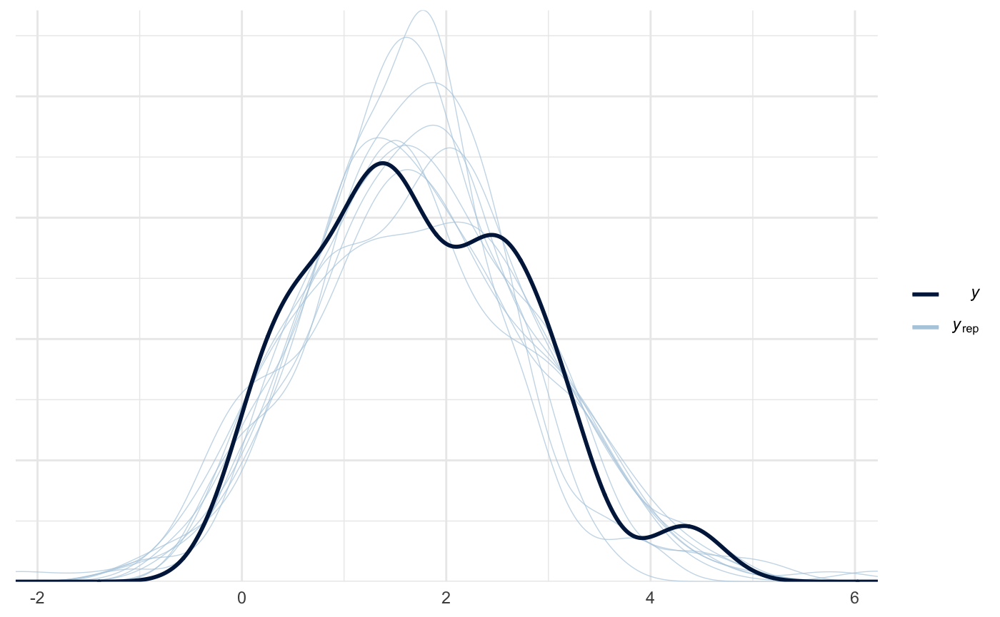
# priors prior_summary(m1)
## prior class coef group resp dpar nlpar bound
## 1 normal(0, 1) b
## 2 b NRTEN100
## 3 b NRTEN120
## 4 b WMGTAWD
## 5 student_t(3, 1.6, 2.5) Intercept
## 6 student_t(3, 0, 2.5) sd
## 7 sd REP
## 8 sd Intercept REP
## 9 student_t(3, 0, 2.5) sigma# posteriors mcmc_plot(m1)
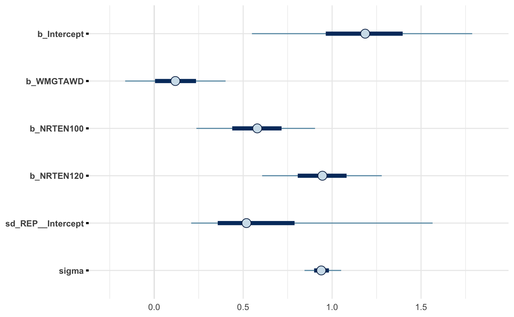
pander(describe_posterior(m1))
| Parameter | Median | CI | CI_low | CI_high | pd | ROPE_CI | |
|---|---|---|---|---|---|---|---|
| 1 | b_Intercept | 1.186 | 89 | 0.59 | 1.77 | 0.9917 | 89 |
| 4 | b_WMGTAWD | 0.1189 | 89 | -0.1566 | 0.3916 | 0.7572 | 89 |
| 2 | b_NRTEN100 | 0.5794 | 89 | 0.2567 | 0.9029 | 0.9976 | 89 |
| 3 | b_NRTEN120 | 0.9455 | 89 | 0.6259 | 1.279 | 1 | 89 |
| ROPE_low | ROPE_high | ROPE_Percentage | Rhat | ESS | |
|---|---|---|---|---|---|
| 1 | -0.1062 | 0.1062 | 0 | 1.001 | 3571 |
| 4 | -0.1062 | 0.1062 | 0.4249 | 1.001 | 9579 |
| 2 | -0.1062 | 0.1062 | 0 | 1 | 7790 |
| 3 | -0.1062 | 0.1062 | 0 | 1.001 | 7948 |
Tiller Sheath Blight Severity Model
Model Structure
Tiller sheath blight severity AUDPS, TShB_percent_AUDPS, is the response variable. Water management, WMGT, and nitrogen rate, NRTE, are fixed effects. Replicate, REP, is treated as a random effect.
m2_priors <- prior_string("normal(0, 1)", class = "b") m2 <- brm( formula = TShB_percent_AUDPS ~ WMGT + NRTE + (1 | REP), family = skew_normal(), data = AUDPS_2015, seed = 27, control = list(adapt_delta = 0.9999), warmup = 5000, iter = 8000, prior = m2_priors, sample_prior = TRUE )
## Compiling the C++ model## Start samplingDiagnostics
# asses convergence plot(m2)

# assess fit pp_check(m2)

# priors prior_summary(m2)
## prior class coef group resp dpar nlpar bound
## 1 normal(0, 4) alpha
## 2 normal(0, 1) b
## 3 b NRTEN100
## 4 b NRTEN120
## 5 b WMGTAWD
## 6 student_t(3, 17.8, 13.6) Intercept
## 7 student_t(3, 0, 13.6) sd
## 8 sd REP
## 9 sd Intercept REP
## 10 student_t(3, 0, 13.6) sigma# posteriors mcmc_plot(m2)

pander(describe_posterior(m2))
| Parameter | Median | CI | CI_low | CI_high | pd | ROPE_CI | |
|---|---|---|---|---|---|---|---|
| 1 | b_Intercept | 17.36 | 89 | 13.87 | 21.09 | 0.9999 | 89 |
| 4 | b_WMGTAWD | 0.1747 | 89 | -1.242 | 1.557 | 0.5792 | 89 |
| 2 | b_NRTEN100 | -0.7215 | 89 | -2.033 | 0.5642 | 0.8088 | 89 |
| 3 | b_NRTEN120 | 2.436 | 89 | 0.8795 | 4.088 | 0.9927 | 89 |
| ROPE_low | ROPE_high | ROPE_Percentage | Rhat | ESS | |
|---|---|---|---|---|---|
| 1 | -1.246 | 1.246 | 0 | 1 | 3925 |
| 4 | -1.246 | 1.246 | 0.9406 | 0.9999 | 8826 |
| 2 | -1.246 | 1.246 | 0.7622 | 1 | 9865 |
| 3 | -1.246 | 1.246 | 0.06629 | 1 | 10052 |
Leaf Sheath Blight Severity Model
Model Structure
Leaf sheath blight severity AUDPS, LShB_percent_AUDPS is the response variable. Water management, WMGT, and nitrogen rate, NRTE, are fixed effects. Replicate, REP, is treated as a random effect.
m3_priors <- prior_string("normal(1, 3)", class = "b") m3 <- brm( formula = LShB_percent_AUDPS ~ WMGT + NRTE + (1 | REP), family = hurdle_gamma(), data = AUDPS_2015, seed = 27, control = list(adapt_delta = 0.99), warmup = 5000, iter = 8000, prior = m3_priors, sample_prior = TRUE )
## Compiling the C++ model## Start samplingDiagnostics
# asses convergence plot(m3)
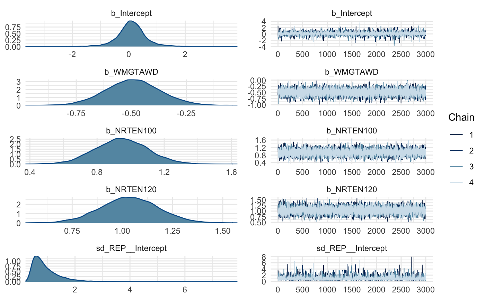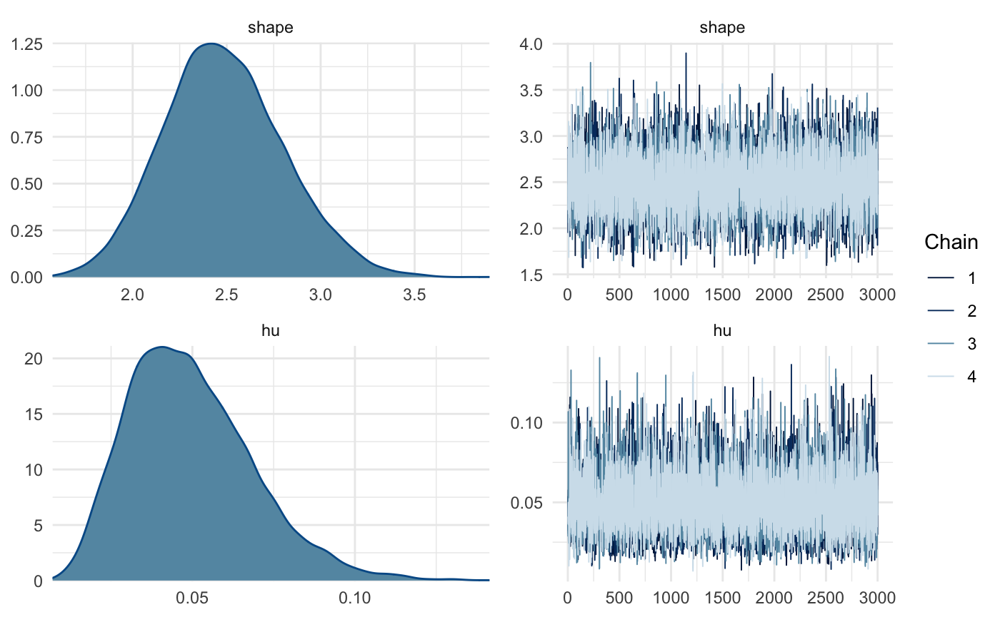
# assess fit pp_check(m3)
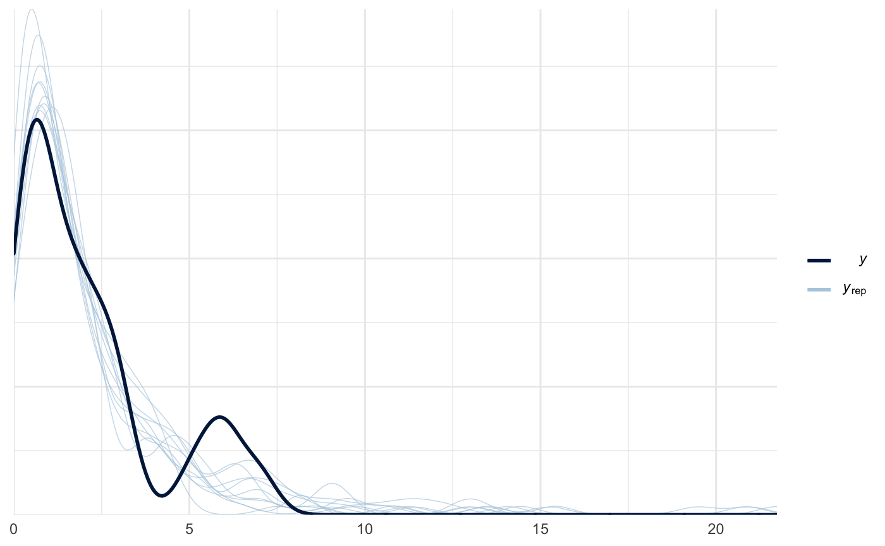
# priors prior_summary(m3)
## prior class coef group resp dpar nlpar bound
## 1 normal(1, 3) b
## 2 b NRTEN100
## 3 b NRTEN120
## 4 b WMGTAWD
## 5 beta(1, 1) hu
## 6 student_t(3, 0.4, 2.5) Intercept
## 7 student_t(3, 0, 2.5) sd
## 8 sd REP
## 9 sd Intercept REP
## 10 gamma(0.01, 0.01) shape# posteriors mcmc_plot(m3)

pander(describe_posterior(m3))
| Parameter | Median | CI | CI_low | CI_high | pd | ROPE_CI | |
|---|---|---|---|---|---|---|---|
| 1 | b_Intercept | 0.09748 | 89 | -0.6851 | 0.8651 | 0.598 | 89 |
| 4 | b_WMGTAWD | -0.4934 | 89 | -0.6904 | -0.2934 | 1 | 89 |
| 2 | b_NRTEN100 | 0.9459 | 89 | 0.7003 | 1.202 | 1 | 89 |
| 3 | b_NRTEN120 | 1.035 | 89 | 0.8123 | 1.271 | 1 | 89 |
| ROPE_low | ROPE_high | ROPE_Percentage | Rhat | ESS | |
|---|---|---|---|---|---|
| 1 | -0.198 | 0.198 | 0.4078 | 1.001 | 3243 |
| 4 | -0.198 | 0.198 | 0 | 1 | 11983 |
| 2 | -0.198 | 0.198 | 0 | 0.9997 | 9573 |
| 3 | -0.198 | 0.198 | 0 | 0.9999 | 10057 |
2016 Models
Tiller Sheath Blight Incidence Model
Model Structure
Tiller sheath blight incidence AUDPS, TShB_incidence_AUDPS is the response variable. Water management, WMGT, and nitrogen rate, NRTE, are fixed effects. Replicate, REP, is treated as a random effect.
m4_priors <- prior_string("normal(0, 2)", class = "b") m4 <- brm( formula = TShB_incidence_AUDPS ~ WMGT + NRTE + (1 | REP), family = hurdle_gamma(), data = AUDPS_2016, seed = 27, control = list(adapt_delta = 0.9999), warmup = 5000, iter = 8000, prior = m4_priors, sample_prior = TRUE )
## Compiling the C++ model## Start sampling## Warning: There were 2 transitions after warmup that exceeded the maximum treedepth. Increase max_treedepth above 10. See
## http://mc-stan.org/misc/warnings.html#maximum-treedepth-exceeded## Warning: Examine the pairs() plot to diagnose sampling problemsDiagnostics
# asses convergence plot(m4)

# assess fit pp_check(m4)
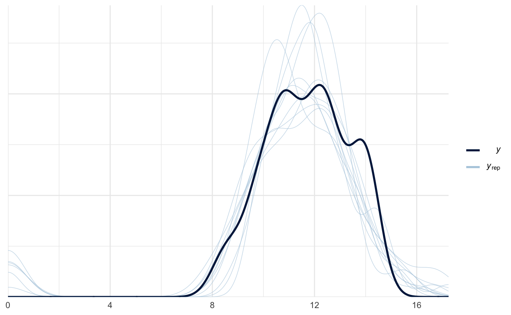
# posteriors mcmc_plot(m4)
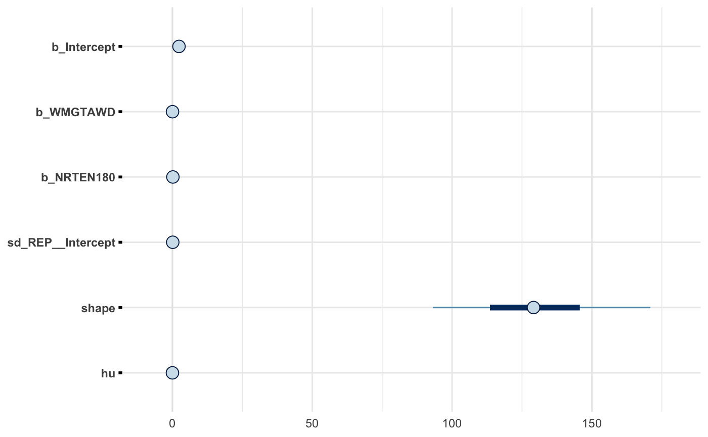
pander(describe_posterior(m4))
| Parameter | Median | CI | CI_low | CI_high | pd | ROPE_CI | |
|---|---|---|---|---|---|---|---|
| 1 | b_Intercept | 2.351 | 89 | 2.204 | 2.48 | 1 | 89 |
| 3 | b_WMGTAWD | 0.03449 | 89 | -0.002982 | 0.06822 | 0.937 | 89 |
| 2 | b_NRTEN180 | 0.1719 | 89 | 0.1352 | 0.2062 | 1 | 89 |
| ROPE_low | ROPE_high | ROPE_Percentage | Rhat | ESS | |
|---|---|---|---|---|---|
| 1 | -0.1609 | 0.1609 | 0 | 1.002 | 2323 |
| 3 | -0.1609 | 0.1609 | 1 | 1 | 8643 |
| 2 | -0.1609 | 0.1609 | 0.301 | 1 | 9324 |
Tiller Sheath Blight Severity Model
Model Structure
Tiller sheath blight severity AUDPS, TShB_percent_AUDPS, is the response variable. Water management, WMGT, and nitrogen rate, NRTE, are fixed effects. Replicate, REP, is treated as a random effect.
m5_priors <- prior_string("normal(0, 1)", class = "b") m5 <- brm( formula = TShB_percent_AUDPS ~ WMGT + NRTE + (1 | REP), family = hurdle_gamma(), data = AUDPS_2016, seed = 27, control = list(adapt_delta = 0.99, max_treedepth = 15), warmup = 5000, iter = 8000, prior = m5_priors, sample_prior = TRUE )
## Compiling the C++ model## Start sampling## Warning: There were 4 divergent transitions after warmup. Increasing adapt_delta above 0.99 may help. See
## http://mc-stan.org/misc/warnings.html#divergent-transitions-after-warmup## Warning: Examine the pairs() plot to diagnose sampling problemsDiagnostics
# asses convergence plot(m5)
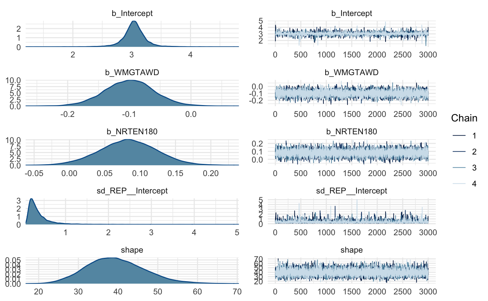
# assess fit pp_check(m5)
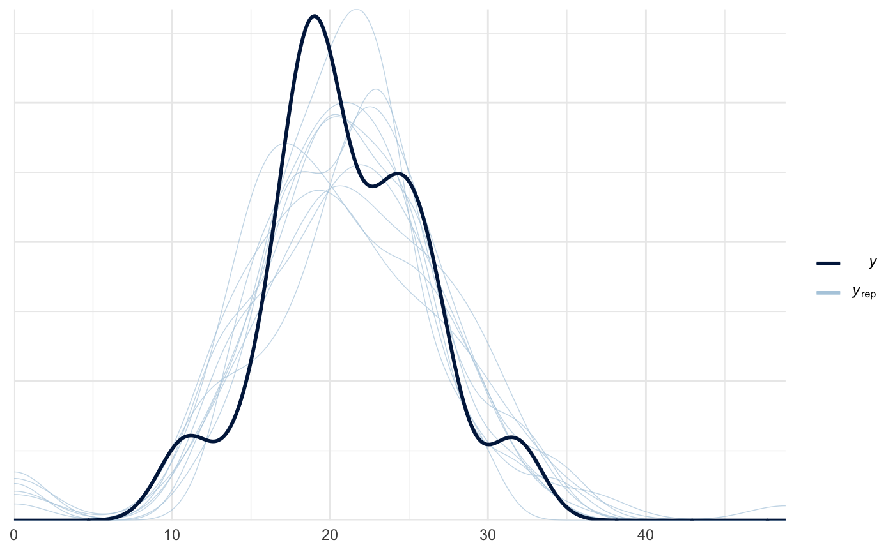
# priors prior_summary(m5)
## prior class coef group resp dpar nlpar bound
## 1 normal(0, 1) b
## 2 b NRTEN180
## 3 b WMGTAWD
## 4 beta(1, 1) hu
## 5 student_t(3, 3, 2.5) Intercept
## 6 student_t(3, 0, 2.5) sd
## 7 sd REP
## 8 sd Intercept REP
## 9 gamma(0.01, 0.01) shape# posteriors mcmc_plot(m5)
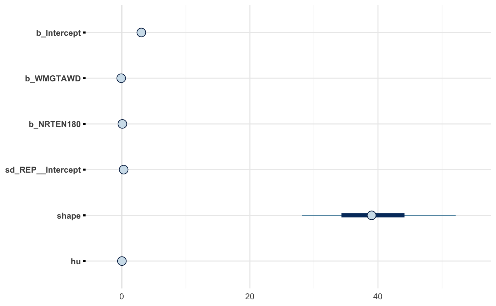
pander(describe_posterior(m5))
| Parameter | Median | CI | CI_low | CI_high | pd | ROPE_CI | |
|---|---|---|---|---|---|---|---|
| 1 | b_Intercept | 3.04 | 89 | 2.744 | 3.338 | 1 | 89 |
| 3 | b_WMGTAWD | -0.0995 | 89 | -0.163 | -0.03511 | 0.9919 | 89 |
| 2 | b_NRTEN180 | 0.08293 | 89 | 0.01844 | 0.1481 | 0.9784 | 89 |
| ROPE_low | ROPE_high | ROPE_Percentage | Rhat | ESS | |
|---|---|---|---|---|---|
| 1 | -0.494 | 0.494 | 0 | 1.001 | 2912 |
| 3 | -0.494 | 0.494 | 1 | 1 | 9912 |
| 2 | -0.494 | 0.494 | 1 | 1 | 8858 |
Leaf Sheath Blight Severity Model
Model Structure
Leaf sheath blight severity AUDPS, LShB_percent_AUDPS is the response variable. Water management, WMGT, and nitrogen rate, NRTE, are fixed effects. Replicate, REP, is treated as a random effect.
m6_priors <- prior_string("normal(0, 2)", class = "b") m6 <- brm( formula = LShB_percent_AUDPS ~ WMGT + NRTE + (1 | REP), family = hurdle_gamma(), data = AUDPS_2016, seed = 27, control = list(adapt_delta = 0.999), warmup = 5000, iter = 8000, prior = m6_priors, sample_prior = TRUE )
## Compiling the C++ model## Start sampling## Warning: There were 1 divergent transitions after warmup. Increasing adapt_delta above 0.999 may help. See
## http://mc-stan.org/misc/warnings.html#divergent-transitions-after-warmup## Warning: Examine the pairs() plot to diagnose sampling problemsDiagnostics
# asses convergence plot(m6)
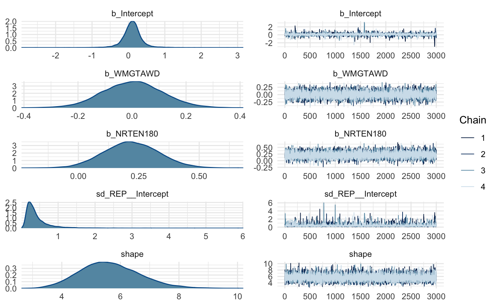
# assess fit pp_check(m6)

# check influence of priors prior_summary(m6)
## prior class coef group resp dpar nlpar bound
## 1 normal(0, 2) b
## 2 b NRTEN180
## 3 b WMGTAWD
## 4 beta(1, 1) hu
## 5 student_t(3, 0.1, 2.5) Intercept
## 6 student_t(3, 0, 2.5) sd
## 7 sd REP
## 8 sd Intercept REP
## 9 gamma(0.01, 0.01) shape# posteriors mcmc_plot(m6)
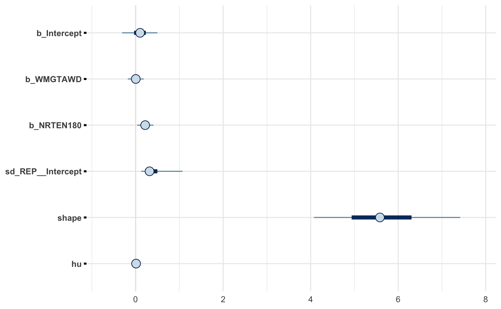
pander(describe_posterior(m6))
| Parameter | Median | CI | CI_low | CI_high | pd | ROPE_CI | |
|---|---|---|---|---|---|---|---|
| 1 | b_Intercept | 0.1021 | 89 | -0.271 | 0.4962 | 0.6957 | 89 |
| 3 | b_WMGTAWD | 0.003263 | 89 | -0.1679 | 0.1832 | 0.5118 | 89 |
| 2 | b_NRTEN180 | 0.218 | 89 | 0.04184 | 0.4038 | 0.9752 | 89 |
| ROPE_low | ROPE_high | ROPE_Percentage | Rhat | ESS | |
|---|---|---|---|---|---|
| 1 | -0.05534 | 0.05534 | 0.208 | 1.002 | 2966 |
| 3 | -0.05534 | 0.05534 | 0.4336 | 0.9999 | 8578 |
| 2 | -0.05534 | 0.05534 | 0.01779 | 1 | 9294 |